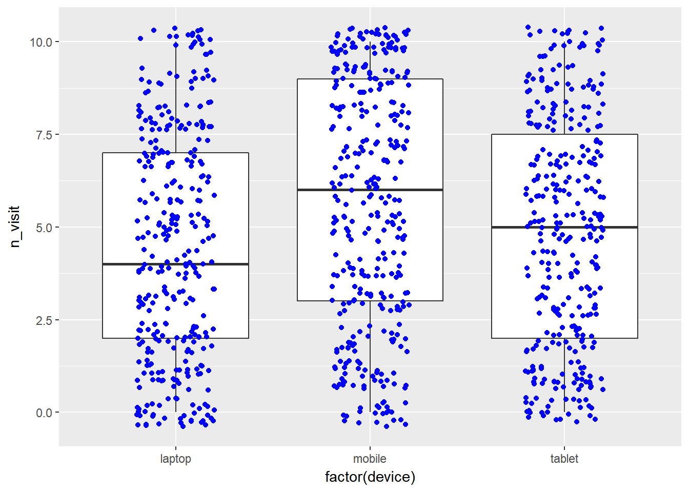

Introduction
This is the 9th post in the series Elegant Data Visualization with ggplot2. In the previous post, we learnt how to build bar charts. In this post, we will
- build box plots
- modify box
- color
- fill
- alpha
- line size
- line type
- modify outlier
- color
- shape
- size
- alpha
Libraries, Code & Data
We will use the following libraries in this post:
All the data sets used in this post can be found here and code can be downloaded from here.
Data
ecom <- readr::read_csv('https://raw.githubusercontent.com/rsquaredacademy/datasets/master/web.csv')
ecom## # A tibble: 1,000 x 11
## id referrer device bouncers n_visit n_pages duration country
## <int> <chr> <chr> <chr> <int> <dbl> <dbl> <chr>
## 1 1 google laptop true 10 1 693 Czech Republic
## 2 2 yahoo tablet true 9 1 459 Yemen
## 3 3 direct laptop true 0 1 996 Brazil
## 4 4 bing tablet false 3 18 468 China
## 5 5 yahoo mobile true 9 1 955 Poland
## 6 6 yahoo laptop false 5 5 135 South Africa
## 7 7 yahoo mobile true 10 1 75 Bangladesh
## 8 8 direct mobile true 10 1 908 Indonesia
## 9 9 bing mobile false 3 19 209 Netherlands
## 10 10 google mobile true 6 1 208 Czech Republic
## # ... with 990 more rows, and 3 more variables: purchase <chr>,
## # order_items <dbl>, order_value <dbl>Data Dictionary
- id: row id
- referrer: referrer website/search engine
- os: operating system
- browser: browser
- device: device used to visit the website
- n_pages: number of pages visited
- duration: time spent on the website (in seconds)
- repeat: frequency of visits
- country: country of origin
- purchase: whether visitor purchased
- order_value: order value of visitor (in dollars)
Univariate Box Plot
ggplot(ecom) +
geom_boxplot(aes(x = factor(1), y = n_visit))Box Plot
ggplot(ecom) +
geom_boxplot(aes(x = factor(device), y = n_visit))Horizontal Box Plot
ggplot(ecom) +
geom_boxplot(aes(x = factor(device), y = n_visit)) +
coord_flip()Notch
ggplot(ecom) +
geom_boxplot(aes(x = factor(device), y = n_visit),
notch = TRUE) 
Jitter
ggplot(ecom, aes(x = factor(device), y = n_visit)) +
geom_boxplot() +
geom_jitter(width = 0.2, color = 'blue')
Outliers
- color
- shape
- size
- alpha
Outlier Color
ggplot(ecom) +
geom_boxplot(aes(x = factor(device), y = duration),
outlier.color = 'red')Outlier Shape
ggplot(ecom) +
geom_boxplot(aes(x = factor(device), y = duration),
outlier.shape = 23)
Outlier Shape
ggplot(ecom) +
geom_boxplot(aes(x = factor(device), y = duration), outlier.shape = 23) +
expand_limits(y = c(0, 1100))Outlier Size
ggplot(ecom) +
geom_boxplot(aes(x = factor(device), y = duration), outlier.size = 3) +
expand_limits(y = c(0, 1100))Outlier Alpha
ggplot(ecom) +
geom_boxplot(aes(x = factor(device), y = duration),
outlier.color = 'blue', outlier.alpha = 0.3) +
expand_limits(y = c(0, 1100))Box Aesthetics
- color
- fill
- alpha
- line type
- line width
Specify Values for Fill
ggplot(ecom) +
geom_boxplot(aes(x = factor(device), y = duration),
fill = c('blue', 'red', 'green')) +
expand_limits(y = c(0, 1100))Map Fill to Variable
ggplot(ecom) +
geom_boxplot(aes(x = factor(device), y = duration,
fill = factor(device))) +
expand_limits(y = c(0, 1100))Specify Values for Alpha
ggplot(ecom) +
geom_boxplot(aes(x = factor(device), y = duration),
fill = 'blue', alpha = 0.3) +
expand_limits(y = c(0, 1100))Specify Values for Color
ggplot(ecom) +
geom_boxplot(aes(x = factor(device), y = duration),
color = c('blue', 'red', 'green')) +
expand_limits(y = c(0, 1100))Map Color to Variables
ggplot(ecom) +
geom_boxplot(aes(x = factor(device), y = duration,
color = factor(device))) +
expand_limits(y = c(0, 1100))Specify Values for Line Width
ggplot(ecom) +
geom_boxplot(aes(x = factor(device), y = duration),
size = 1.5) +
expand_limits(y = c(0, 1100))
Specify Values for Line Type
ggplot(ecom) +
geom_boxplot(aes(x = factor(device), y = duration),
linetype = 2) +
expand_limits(y = c(0, 1100))Summary
In this post, we learnt to:
- build box plots
- modify outlier color, shape, size etc.
- modify box color
- modify box line color, size and line type